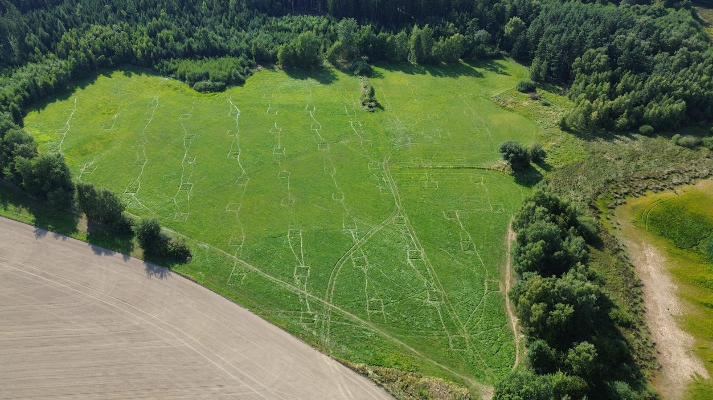

CESNET S3 & Kubernetes Manuals
Pollination Ecology Group (Handrkov) — Practical Handbook & Templates
2026-11-12

CESNET S3 & Kubernetes Manuals
Pollination Ecology Group · Handrkov Field Research & Cloud Computing Hub
1. S3 Storage Guide 3. Run R & Python on K8sQuick Start for Colleagues
All raw datasets, microscopy scans, and model outputs are stored on CESNET S3 (peg-bucket), while heavy R/Python analyses, GPU training, and web apps run on CERIT-SC Kubernetes (stenc-ns).
Welcome
Welcome to the practical manuals for using CESNET Object Storage (S3) and CESNET / e-INFRA CZ Kubernetes (CERIT-SC) in our research group.
These guides are written for all members of the lab—whether you want to browse or upload field datasets using a graphical interface on Windows/macOS, read .rds/.csv files directly into R or Python, run heavy CPU/GPU scripts on the cluster without building Docker containers, or deploy interactive web applications.
Manual Suite Overview
| Manual | Markdown | HTML | What It Covers | |
|---|---|---|---|---|
| 1. CESNET S3 Storage | 01_CESNET_S3_Storage_Manual.md |
HTML |
PDF |
GUI access (Cyberduck / WinSCP), mounting as a local folder (s3fs), fast bulk transfers (rclone / aws-cli), and direct R (aws.s3) & Python (boto3) integration. |
| 2. Kubernetes Getting Started | 02_Kubernetes_Getting_Started.md |
HTML |
PDF |
Rancher login (rancher.cloud.e-infra.cz), kubeconfig.yaml setup, installing kubectl, mandatory CERIT-SC non-root security rules, and the kubectl cheat sheet. |
| 3. Running R & Python Scripts | 03_Running_R_and_Python_Scripts_on_K8s.md |
HTML |
PDF |
Running .R and .py scripts on CPU or NVIDIA GPUs without building Docker images (ConfigMap + Secret), S3 data syncing, and interactive debugging pods. |
| 4. Deploying Web Apps | 04_Deploying_Web_Apps_on_K8s.md |
HTML |
PDF |
Hosting Flask/Waitress, Streamlit, or R Shiny dashboards with automatic HTTPS (*.dyn.cloud.e-infra.cz) and zero-downtime updates. |
Ready-to-Use Templates (templates/)
You do not need to write configuration files from scratch. Copy and adapt the templates in the templates/ folder:
S3 Storage Templates (templates/s3/)
templates/s3/mount_cesnet_s3.sh— Mounts or unmounts thepeg-bucketS3 storage as a local folder (~/cesnet_s3) on Linux/macOS vias3fs.templates/s3/rclone_backup_template.sh— High-speed parallel upload/backup script usingrclone copy(safe against accidental deletions).templates/s3/s3_example.R— Complete R script showing how to list files, read/save.rdsand.csvobjects directly in memory, and upload/download files usingaws.s3.templates/s3/s3_example.py— Complete Python script usingboto3andpandasto list, stream, download, and upload files topeg-bucket.
Kubernetes Templates (templates/k8s/)
templates/k8s/run_script_on_k8s.sh— One-command launcher: pass any local.Ror.pyfile (./run_script_on_k8s.sh my_script.Ror./run_script_on_k8s.sh train.py --gpu) and it automatically uploads the script to aConfigMap, submits a CERIT-SC compliant Job with S3 credentials, and streams live logs!templates/k8s/r-cpu-job.yaml— YAML template for running R scripts (rocker/tidyverse:4.4.1) with S3 credentials and writable user library directory.templates/k8s/python-cpu-job.yaml— YAML template for running Python CPU data-processing jobs (python:3.12-slim).templates/k8s/python-gpu-job.yaml— YAML template for running GPU deep learning jobs (ultralytics/ultralytics:latest/ PyTorch) with 4 GiB/dev/shmshared memory and S3 sync.templates/k8s/web-app-deployment.yaml— CompleteDeployment+Service+ HTTPSIngressmanifest for hosting web applications on*.dyn.cloud.e-infra.cz.
Architecture Overview: How CESNET S3 & Kubernetes Work Together
In our workflow, Kubernetes compute pods are stateless (when a job finishes, its temporary container disk disappears). Therefore, all persistent datasets, images, and model outputs live on CESNET S3 Object Storage:
+-------------------------------------------------------------------------+
| Your Laptop / Workstation (Linux, Windows, macOS) |
| * Browse/upload files via Cyberduck, WinSCP, s3fs, or rclone |
| * Submit R / Python scripts to K8s via `kubectl` |
+-------------------+-------------------------------------+---------------+
| |
1. Upload data / 2. Submit Job / ConfigMap
Read final results (`kubectl apply -f ...`)
| |
v v
+---------------------------------------+ +---------------------------+
| CESNET S3 Object Storage | | CESNET / CERIT-SC K8s |
| * Endpoint: https://s3.cl4.du.cesnet.cz|<--->| * Rancher: kuba-cluster |
| * Bucket: peg-bucket | 3. | * Namespace: stenc-ns |
| * Legacy: s3-old.cl4.du.cesnet.cz |Pull | * Runs CPU & GPU Jobs |
| (bucket) |& | and Web Apps |
+---------------------------------------+Push +---------------------------+Quick Reference Table (Group Defaults)
| Parameter | Value | Notes |
|---|---|---|
| Primary S3 Endpoint | https://s3.cl4.du.cesnet.cz |
Current production CESNET CL4 Ceph S3 endpoint |
| Primary S3 Bucket | peg-bucket |
Pollination Ecology Group shared bucket |
| Legacy S3 Endpoint / Bucket | https://s3-old.cl4.du.cesnet.cz / bucket |
Older storage cluster (use only if migrating legacy files) |
| Rancher Web Dashboard | https://rancher.cloud.e-infra.cz |
Log in via eduID.cz (Charles University / CAS) |
| Kubernetes Cluster | kuba-cluster |
Download kubeconfig.yaml from Rancher |
| Kubernetes Namespace | stenc-ns |
Default namespace for our group’s jobs, secrets, and apps |
| K8s S3 Credentials Secret | s3-credentials |
Pre-configured Secret in stenc-ns (access-key & secret-key) |